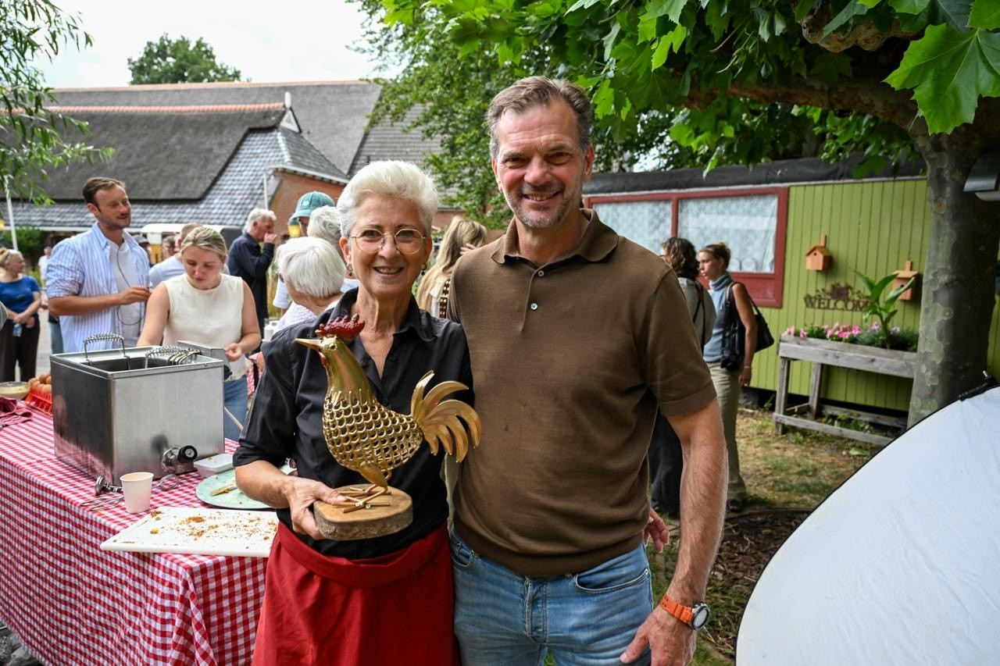
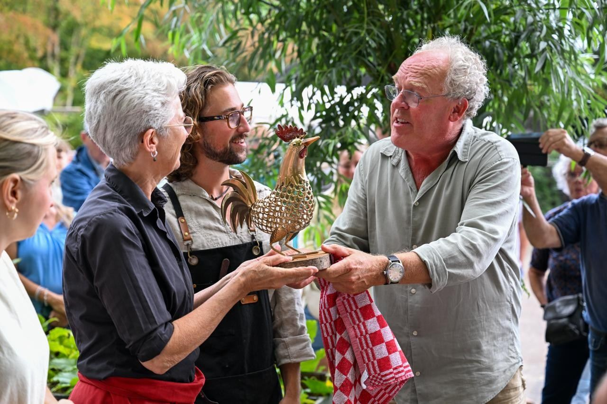

Restaria Zuid wint eerste prijs bij Eierballenwedstrijd 2026!
Met trots mogen we bekendmaken dat Restaria Zuid de eerste prijs heeft gewonnen bij de Eierballenwedstrijd 2026. De wedstrijd vond plaats tijdens de opnames van het televisieprogramma Bert & Breakfast van Bert Visscher, bij de B&B van Landgoedboerderij Oosterheerdt.
Het programma wordt in december en januari uitgezonden bij Omroep MAX. Houd de uitzendingen dus in de gaten om Restaria Zuid en onze prijswinnende eierbal op televisie te zien. Wij zijn ontzettend trots op deze mooie prestatie!